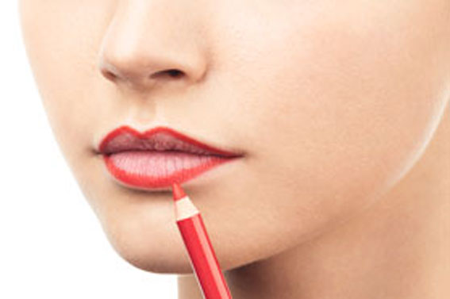

Tips til læbestift
Før læbestiften
Inden du skal ud og føle dig selvsikker med hvilken som helst læbestift, er det vigtigt at dine læber har det godt inden. Forberede derfor læberne således, inden påførelse af læbestiftenden.
- Start med at eksfolier læberne, så den overflødige døde hud fjernes. Dette kan gøres med din yndligs læbescrub, med en vådserviette, eller du kan lave din egen med sugar og honning. Fjern derefter scrubben.
- Påfør din favorit Labello læbepomade. Lad pomaden sidde i fem minutter, så den kan nå at synke ind i dine læber.
Påførelse af læbestiften
- Efter de fem minutter, skal læberne defineres, for præcision. Brug dernæst den ønskede lipliner, som har samme farve som den ønskede læbestift. 
- Afslut med den ønskede læbestift og fyld læberne ud. Husk også at påfører læbestiften over liplineren, så de falder naturligt ind i hinanden. Ønskes en mere præcis påførelse, så anvend læbestiften med en lip brush.
- Feel confident!